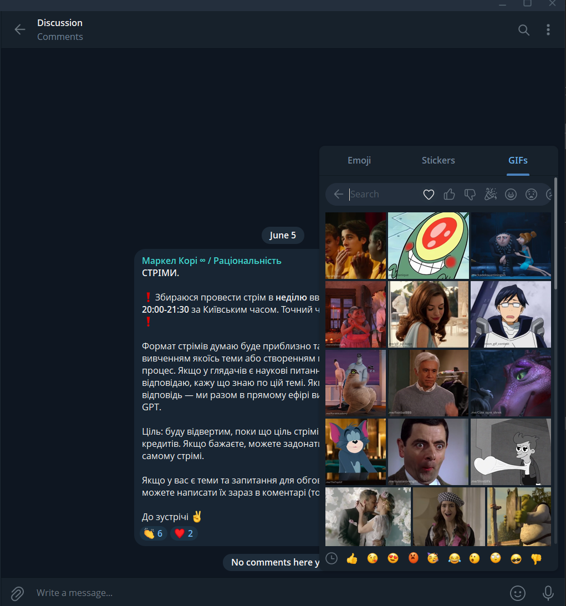

МемКат
Відеоредактор для блогерів із вбудованою бібліотекою мемів
Щоб зробити мем-відео, доводиться перемикатись між редактором, Giphy, TikTok і YouTube — шукаєш меми, звуки, тренди по різних застосунках. Рутина вбиває темп.
Усе в одному вікні. Зняв → додав мем → виклав. Нуль перемикань між застосунками. Вбудована бібліотека мемів (Giphy, Tenor) прямо в редакторі.
Контент-мейкери TikTok / YouTube Shorts / Reels, 16–30 років. Монтують швидко й часто, цінують актуальні тренди, не хочуть витрачати час на рутину.
Веб, mobile-first. Адаптив на десктоп і планшет. Імпорт відео з будь-якого пристрою — телефон, ПК, ноут.
Імпорт відео · Таймлайн (обрізка, розрізання, порядок) · Накладання мема / стікера · Додавання звуку · Текст вручну · Експорт 9:16 і 1:1
$0. WebCodecs (рендер на пристрої) + IndexedDB (локальне сховище) + Giphy/Tenor API (безкоштовний tier) + Cloudflare Pages / Vercel. Реальні витрати — домен ~$10–15/рік.
Конкуренти
Три групи конкурентів
WebFetch: capcut.com, kapwing.com, veed.io, clideo.com, imgflip.com · Playwright screenshots: research/screens/ · ? = за логіном, даних з редактора немає
| Назва | Тип | Чому в цій групі | Що вивчити для нашої задачі |
|---|---|---|---|
| CapCut Web | Веб відеоредактор | Найближчий по всіх параметрах: аудиторія 16–30, веб, тренди і звуки вбудовані. Вимагає логін одразу [capcut-editor-desktop.png] | UX таймлайну на мобайлі · як організована бібліотека трендів · onboarding flow |
| Kapwing | Веб редактор із мем-шаблонами | Є мем-шаблони (текст поверх фото), але вбудованої GIF-бібліотеки немає. Важкий, не mobile-first — підтверджує що gap реальний навіть у найближчого конкурента [kapwing-editor-desktop.png] | Freemium-межа · що входить у безкоштовний tier · чому пускає без логіну |
| Canva Video | Дизайн-платформа з відео | Масова аудиторія креаторів, сильний onboarding, шаблони. Відео — не пріоритет, таймлайн слабкий [canva-home-mobile.png] | Як спрощують складний інструмент до простого flow · onboarding перших кроків |
| Veed.io | Веб редактор для соцмереж | Веб, mobile-friendly, фокус на контент-мейкерів. Більшість фіч платно [veed.io] | Export UX · pricing tier · що дають безкоштовно і де стіна |
| Clideo | Найпростіший веб редактор | Мінімальний scope — видно де нижня межа "достатньо". Немає таймлайну, тільки разові операції [clideo-editor-desktop.png] | Що вважають мінімальним MVP · де їх ліміт по функціоналу |
JTBD: "зробити вірусний мем-контент і викласти швидко"
| Назва | Тип | Чому в цій групі | Що вивчити для нашої задачі |
|---|---|---|---|
| TikTok native editor | Редактор всередині платформи | Той самий JTBD без виходу з TikTok — головний конкурент за увагу. Прив'язаний до однієї платформи ? | Як спрощують додавання звуку й ефектів · жести · швидкість від наміру до публікації |
| CapCut mobile | Мобайл-застосунок | Золотий стандарт мобільного монтажу, та сама аудиторія. Потрібен акаунт, ByteDance ? | Mobile-first UX рішення · жести на таймлайні · як організований доступ до трендів |
| Mematic / ImgFlip | Мем-генератор (статичні) | Той самий юзер, але робить статичні меми, не відео. Має бібліотеку шаблонів [imgflip.com] | Які шаблони найпопулярніші · формати мемів · freemium-модель $4.95 |
| Giphy | GIF-бібліотека і пошук | Продукт який МемКат частково замінює — юзер більше не мусить іти в Giphy окремо [giphy-home-mobile.png] | UX пошуку · механіка trending endpoint · вимоги атрибуції "Powered by GIPHY" |
| Instagram Reels editor | Native editor для Reels | Той самий JTBD для Reels-аудиторії. Прив'язаний до Instagram ? | Як вирішують накладання стікерів і тексту · UX вибору формату публікації |
| Назва | Тип | Чому в цій групі | Що вивчити для нашої задачі |
|---|---|---|---|
| Figma | Браузерний дизайн-інструмент | Еталон desktop-level performance у браузері без інсталяції. Складний інструмент з простим входом | Як досягають швидкості Canvas/WebGL у вебі · UX першого сеансу без туторіалу |
| Візуальна бібліотека | Еталон discovery і пошуку візуального контенту у великій базі | UX бібліотеки · як організований trending feed · infinite scroll без втрати контексту | |
| Spotify | Стримінг + бібліотека | Еталон організації великого контенту + тренди + пошук в одному продукті | Як будують "Trending Now" · UX рекомендацій без ML на своїй стороні |
| Linear | Веб-інструмент для команд | Еталон швидкості й якості продукту у браузері. Відчуття "миттєвого" інструменту | Принципи fast UX · як досягають відчуття нативного застосунку у вебі |
Детальна матриця
| Конкурент | Аудиторія | Основа продукту | Ключовий механізм | Довіра | Монетизація | Бібліотека мемів |
|---|---|---|---|---|---|---|
| CapCut Web | Широка, 16–30, всі соцмережі | AI-редактор + 873K+ шаблонів | AI-генерація + шаблони | ByteDance, NVIDIA, TikTok | Freemium; AI платно | Немає [capcut-editor-desktop.png: login wall] |
| Kapwing | Команди, маркетологи | AI відео з тексту + редактор | "Turn prompt into video" | Корпоративний tone | Freemium; UPGRADE в редакторі | Немає — тільки мем-шаблони (текст поверх фото) |
| Veed.io | Enterprise, маркетинг | AI-субтитри + редактор | Auto-subtitles, Eye Contact | Amazon / Netflix / Google | Freemium + Enterprise | Немає ? |
| Clideo | Масовий, побутові задачі | Простий набір онлайн-інструментів | "Edit it in any way" | 5M юзерів, 366M відео | Freemium; watermark | Немає |
| Imgflip | Мем-мейкери, широка | Мем-генератор (статичні) | 1M+ мем-шаблонів | Обсяг шаблонів | Free + watermark; Pro $4.95/mo; Pro+ $11.95/mo | Є — але тільки статичні, не відео |
| Canva | Дизайнери, бізнес, широка | Дизайн-платформа, відео вторинне | Шаблони + drag&drop | Бренд Canva | Freemium + Pro + Teams | Немає |
| TikTok editor | TikTok, 16–25 | Native editor у платформі | Тренди і звуки у стрічці | TikTok бренд | Безкоштовно | Частково — стікери/GIF всередині TikTok ? |
| CapCut mobile | Мобайл-креатори, 16–30 | Мобайл-відеоредактор | Зв'язок із TikTok трендами | ByteDance | Freemium | Немає — стікери є, Giphy немає ? |
| Giphy | Всі хто шукає GIF | GIF-бібліотека і пошук | Trending endpoint, пошук | Масштаб бази | B2B API + реклама | Є — але тільки перегляд, редактора немає |
3 спільні патерни ринку
Безкоштовний tier є скрізь — але або watermark, або заблокований експорт. Де-факто стандарт категорії.
CapCut, Kapwing, Veed ставлять AI в центр позиціонування. Clideo і Imgflip без AI вже виглядають застаріло.
Giphy окремо. Меми окремо. Редактор окремо. Підтверджено на всіх 9 конкурентах.
3 ключові відмінності
CapCut/Veed/Kapwing важкі (команди). Clideo/Imgflip прості, але функціонально бідні. Порожнє місце — для МемКат.
CapCut ставить login-стіну одразу. Kapwing пускає в редактор без реєстрації. Знижує поріг входу.
Veed — Amazon/Netflix. CapCut — NVIDIA. Clideo — 5M юзерів. МемКат будує через контент і community.
Бенчмарк
Вимір: тертя від наміру вставити мем до елемента на таймлайні (mobile-first, велика бібліотека) · Продукти: best-in-class пікери — не відеоредактори · Дані: пряме використання + telegram.org/blog (WebFetch) + slack.com/help (WebFetch)
Таблиця оцінок (шкала 1–5)
| Критерій | Telegram | Gboard | iOS GIF | Discord | Slack |
|---|---|---|---|---|---|
| Тапів до вставки | 52 тапи | 43 тапи | 34 тапи | 42–3 тапи | 24+ тапи |
| Час до першого результату | 5миттєво, кеш | 31–2 с | 31–3 с | 41–2 с | 32–3 с |
| Якість дефолтної видачі | 5нещодавні + trending | 4trending Tenor | 3trending, середня | 4trending + категорії | 3GIPHY popular |
| Способи пошуку | 5текст + емоджі + категорії | 4текст + категорії | 2тільки текст | 4текст + вкладки | 2тільки текст |
| Прев'ю до вставки | 5GIF анімується в пікері | 5 | 5 | 4hover desktop | 4 |
| Недавні / обрані | 5перший таб, закріплені | 4окрема вкладка | 3є, заховано | 4Favorite GIFs | 1немає! |
| Не вибиває з потоку | 5inline panel знизу | 5inline в клавіатурі | 5inline | 3overlay | 3overlay |
| Слабке з'єднання | 5пакети кешовані | 2без кешу | 2без кешу | 2без кешу | 2без кешу |
| Сума | 40 | 31 | 26 | 29 | 20 |
Топ-3 механізми для MVP
Юзер вводить 😂 і отримує релевантні GIF — природно, без слів. Giphy і Tenor API підтримують emoji search нативно. Одне поле вводу — нульова додаткова інфраструктура.
Пікер відкривається — одразу корисний контент. Нещодавні → IndexedDB ($0). Trending → один Giphy/Tenor запит при відкритті. Q3-аудит 2026-06-14: Tenor >> Giphy по релевантності пошуку (консенсус реальних юзерів) — Tenor пріоритетний API.
Пікер знизу як панель, таймлайн залишається видним. Discord і Slack (overlay, 3/5) підтверджують: overlay збиває фокус і сповільнює.
Telegram кешує пакети (~20–100 стікерів, фіксований обсяг — юзер сам обирає). У МемКат: Giphy/Tenor — 10M+ GIFs, динамічна, нескінченна. Кешувати все неможливо в IndexedDB при $0 інфраструктури.
Патерни
З 5 принципово різних патернів (Zero-query browse / Instant text search / Emoji-as-intent / Curated category tabs / Recents + Favorites) обрано основний і fallback.
Одне поле пошуку приймає і текст ("crying cat"), і емоджі (😂) — обидва шляхи рівноправні. Емоджі — диференціатор і швидкий шлях для тих хто думає настроєм, але не обмеження. Еталон по мінімуму тертя — Telegram (40/40 у бенчмарку).
-
1Аудиторія 16–30 думає настроями, не словами. Intent мем-мейкера — "хочу щось типу 😂 але тупо", а не "funny reaction GIF". Текстовий пошук вимагає сформулювати слово, емоджі — ні. [benchmark: Telegram 40/40]
-
2Giphy і Tenor API підтримують emoji query нативно — $0 додаткової інфраструктури. Надсилаєш емоджі як query параметр — отримуєш GIF. Вкладається в обмеження $0 з CLAUDE.md. Підтверджено (Q3-аудит 2026-06-14): Giphy — dedicated Emoji endpoint [developers.giphy.com]; Tenor GIF Keyboard — "allows users to search by emoji" [Google Play listing]
-
3Різить від усіх конкурентів. Жоден відеоредактор не має emoji search — підтверджено при ресерчі. МемКат стає першим. Підтримує тезу "найшвидший спосіб зробити мем-відео". [WebFetch + скріни capcut, kapwing, veed, clideo, canva]
Новий юзер — history порожня, не знає про emoji search. Trending endpoint дає актуальний контент без дій. Один API-запит при відкритті — $0. Onboarding і fallback одночасно.
Меми живуть тиждень — категорії застарівають. Підтримка = контент-команда або ML. У МемКат: один розробник, $0, без власної бази. Trending endpoint Giphy/Tenor виконує цю роботу краще і безкоштовно.
Висновки
Gaps — підтверджені даними
Гіпотези — потребують тестування
Скріни конкурентів
Знято через Playwright. Mobile viewport 390×844. Desktop 1440×900.



Персони
База: research.md (конкурентний аналіз, UX benchmark) + personas.md + jtbd.md · Прямих інтерв'ю, опитувань і юзер-тестів немає — позначено ?
✓ Підтверджено — пряме джерело в ресерчі · ◑ Частково — є докази, але з нюансом · [?] Гіпотеза — не верифіковано · ✗ Вигадано — жодної основи в даних
19 років, знімає TikTok-контент з телефону. Приходить із ситуації: побачила в стрічці мем цього тижня, хоче вставити в кліп — і починає стрибати між аппами: CapCut → Telegram або Giphy → скачати → повернутись → вставити. ? Частота публікацій і конкретна платформа (TikTok vs Reels) — гіпотеза, не верифіковано. ? Точний timing між "побачила у стрічці" і "відкрила редактор" (секунди / хвилини / того ж дня пізніше) — не верифіковано.
- ◑ Зробити мем-відео поки тренд живий — speed to publish важливіший за якість монтажу.
(Аудит 2026-06-14: частково підтверджено — TikTok 2024–2025 пріоритизує неполірований контент; вікно тренду вузьке і затримка = втрата моменту. Reddit 15.06.2026: r/VideoEditing editor — "Quality is not longer of any concern. The only goal is to get people to engage or stop scrolling" — голос проф-редактора, не creator 16–25. Платформну культуру engagement > quality підтверджено; ? залишається на прямих словах молодих creators.) - ✓ Знайти мем за настроєм ("щось типу 😂 але тупо") без потреби формулювати слово.
(Аудит Q3 2026-06-14: mood-intent підтверджений — GIF-пошук відбувається за короткими TEXT-словами "tired", "reaction", "funny" (Tenor 300M/день); emoji-символ 😂 як ввід — нішева поведінка. TikTok native відкриває trending першим; text пошук вторинний. R1: text + emoji вхід; R2 trending — перший таб. ? чи Аня тисне emoji чи пише слово — прямих даних немає.) - ✓ Не перемикатись між аппами під час монтажу.
? Reddit-аудит 15.06.2026 (r/TikTok, r/VideoEditing, r/editors, r/NewTubers — 40 постів, 147 коментарів): прямих цитат від 16–25 TikTok-мейкерів про процес мем-монтажу не знайдено. Знайдено голос редактора-проф: "should I use memes and gifs for B-roll?" [r/editors] — підтверджує мем = editing material. Пряма цитата від creator 16–25 вимагає якісного дослідження.
24 роки, веде канал із запланованим контентом. Монтує і з телефону, і з ноута залежно від проєкту. До МемКат приходить коли хоче вставити мем-момент в інакше серйозне відео. ? Частота, основна платформа, розподіл телефон/ноут — гіпотеза, даних немає.
- [?] Змонтувати відео з чистим таймлайном — обрізка, порядок, точна підгонка.
- [?] Додати мем або стікер у конкретний момент, а не "десь тут".
- [?] Експортувати в потрібному форматі (9:16 або 1:1).
? Reddit-аудит 15.06.2026: прямих цитат від 24-річних YouTube/Reels-мейкерів не знайдено.
16 років, дивиться TikTok і хоче повторювати формати зі стрічки. ✗ Монтувала тільки в нативному TikTok editor. До МемКат приходить — тригер невідомий, гіпотеза: ✗ пошук "як додати мем у відео".
- [?] Скопіювати формат мем-відео що побачила у стрічці.
- [?] Зробити це швидко і без розуміння монтажу.
- ✓ Викласти поки актуально.
? Reddit-аудит 15.06.2026: прямих цитат від 16-річних TikTok-мейкерів не знайдено.
Що невідомо по всіх персонах
| Персона | Що невідомо | Що потрібно |
|---|---|---|
| Всі | Реальний голос юзера — цитати, відгуки | App Store reviews, Reddit, TikTok коментарі |
| Аня | Тригер "побачила у стрічці" — підтверджений (аудит 2026-06-14); timing між тригером і відкриттям редактора — ? | Пряме спостереження / інтерв'ю |
| Ліза, Денис | Тригер приходу в МемКат | Якісне інтерв'ю або опитування |
| Всі | Де конкретно зупиняються (drop-off) | Юзер-тест або аналітика воронки |
| Всі | Чому обирають конкретний редактор | Якісне інтерв'ю |
| Аня | H4 ◑ частково підтверджено: 16–30 відкидає реєстрацію до показу цінності; після — реєструється. Залишається ?: точні цифри abandonment для відеоредактора vs e-commerce | A/B тест після запуску |
| Аня | Платіжна готовність | A/B або опитування |
| Денис | Чи існує ця когорта в нашій аудиторії | Кількісне опитування |
| Ліза | Характеристики пристрою і з'єднання | Технічна аналітика після запуску |
Jobs to Be Done
Формат: «Коли [ситуація], я хочу [мотивація], щоб [результат]» · У формулюваннях немає назв функцій — тільки прогрес людини · База: jtbd.md
✓ Підтверджено — пряме джерело в ресерчі · ◑ Частково — є докази, але з нюансом · [?] Гіпотеза — не верифіковано · ✗ Вигадано — жодної основи в даних
Related jobs
Персона: Аня — job #2.
Research: Патерни — "Intent мем-мейкера — 'хочу щось типу 😂 але тупо', а не 'funny reaction GIF'." Benchmark: Telegram 40/40, єдиний продукт з emoji search. telegram-gif-picker.png
Персона: Ліза — pain: cold start, history порожня.
Research: Висновки H2 — "'recents + favorites' ламається на порожній history". Benchmark: iOS GIF keyboard (Recents 3/5). Telegram trending без запиту = 5/5.
Персона: Аня — pain: app-switching, overlay-пікер вибиває.
Research: Gap G1 — жоден конкурент не вбудував бібліотеку. Benchmark: Telegram і Gboard 5/5 (inline) vs Discord і Slack 3/5 (overlay) по "не вибиває з потоку".
Персона: Аня — implied контекст регулярного постингу.
Research: Benchmark — Recents/Favorites: Telegram 5/5 ("перший таб + закріплені набори"), Slack 1/5 ("немає!"). Висновки H3: "якщо зберігати нещодавно переглянуті GIF → прискоримо повторний доступ без сервера." Reddit 15.06.2026: r/discordapp [score 712] — "search of just your favourites would be faster than having to scroll or search from 10000s of gifs" — регулярні юзери покладаються на особисту колекцію, а не на загальний пошук. Коли пошук ламається — "The only saving grace is my saved gifs are still around" [r/discordapp, score 1053]. R4 підтверджено як реальна і критична потреба.
Персона: Денис — job #3.
Research: Gap G3 — "порожнє місце між важкими і простими" без контролю форматів. Специфіка форматів (9:16, 1:1) — з CLAUDE.md, не з даних юзерів.
Emotional jobs
Персона: Ліза — "зробити це швидко і без розуміння монтажу"; pain: перший редактор, перевантажений інтерфейс.
Research: Gap G3 — складні редактори відштовхують. Benchmark — кількість тапів як показник friction. ? Емоційна складова ("не боятися") — гіпотеза, прямих даних немає.
Персона: Аня — urgency тренду; Ліза — "викласти поки актуально".
Research: Main job benchmark вимірює швидкість як ключовий параметр. App-switching — кожен додатковий крок підвищує ризик втратити момент. ? Суб'єктивне відчуття "встигла / запізно" — гіпотеза.
Гіпотези JTBD
Jobs що логічно випливають з контексту, але не підкріплені даними ресерчу. Не впливають на рішення поки не верифіковані.
Персона: Аня, Ліза — implied TikTok context.
Статус: ◑ Частково підтверджено Reddit 15.06.2026 (r/NewTubers): соціальний вимір реальний — "You ARE the main character" [46]; "Loved the recognition you got" [3]; "The fact the devs shared your video is a major victory" [7]. Але мотивація ≠ fame-seeking: "genuine passion, proud of your content even if nobody watches" [26]. Конкретне "людина в темі" — залишається [?]; ширше "хочу щоб контент знайшов аудиторію" підтверджено. Потребує якісного інтерв'ю для деталізації.
Персона: Аня — pain: login-стіна CapCut.
Статус: ✓ Підтверджено для MVP (аудит 2026-06-14 + Reddit 15.06.2026): 23–26% юзерів покидають сервіс через вимогу акаунту (SaleCycle); Gen Z — 35% зупиняли сервіс через privacy (Experian 2025). Але та ж Gen Z реєструється після показу цінності. 'No login' → enthusiastic реакція у відеоредакторів [r/VideoEditing]; CEO ненавидить примусові акаунти [r/editors]; paid CapCut-юзери кидають платформу через login lockout [r/VideoEditing]. No-login MVP підтверджений. [?] залишається лише на точних A/B цифрах для нашого конкретного продукту після запуску.
Персона: Ліза — перший редактор.
Чому гіпотеза: Перший досвід і retention — загальний UX-патерн, але не підтверджений даними ресерчу. Потребує юзер-тесту або аналітики після запуску.
JTBD-матриця
Важливість: 3 — ключовий, підтверджено · 2 — релевантний, є дані · 1 — незначний · [?] — даних немає.
| Job | Аня, 19 primary | Денис, 24 secondary | Ліза, 16 secondary | Функція в МемКат | Конкуренти |
|---|---|---|---|---|---|
| MainВстигнути з мем-відео поки тренд живий | 3core scenario; benchmark вимірює тертя від наміру до публікації; Gap G1 | 2аудиторія 16–30 [матриця конкурентів]; навмисний, але тренди релевантні | 3job #3 "викласти поки актуально" [personas.md] | Вбудована мем-бібліотека + таймлайн | ✗ Не закритийGap G1 — жоден з 9 конкурентів |
| R1Знайти мем за настроєм / емоджі | 3"Intent — '😂 але тупо', а не текстовий запит" [Патерни]; job #2 Ані | ?немає даних | 2cold start, emoji знижує поріг входу; непрямо [H2] | Emoji / mood search у бібліотеці | ✗ Не закритийТільки Telegram 40/40 (не редактор) [Benchmark] |
| R2Бачити актуальний контент з нуля (cold start) | 2зазвичай знає що шукає; trending знижує тертя при відкритті | 1навмисний, знає що хоче | 3"recents + favorites ламається на порожній history" [H2]; iOS GIF keyboard 3/5 | Trending tab (Giphy/Tenor endpoint — $0) | ◑ ЧастковоTelegram 5/5 "trending без запиту" [Benchmark] |
| R3Вставити мем не виходячи з монтажу | 3app-switching pain: CapCut → Telegram/Giphy → назад [personas.md; G1] | 2монтує і з телефону, і з ноута; switching релевантне | 2implied; ? прямих даних немає | Inline мем-пікер (panel, не overlay) | ✗ Не закритийGap G1 — жоден з 9 конкурентів |
| R4Повторно знайти мем без нового пошуку | 3implied: регулярний постинг; підтверджено Reddit [r/discordapp, score 712+1053] — saved gifs = основний шлях для регулярних юзерів | 2implied: навмисний контент, повторні меми; ? | 1перший досвід, history порожня | Recents tab у бібліотеці | ◑ ЧастковоTelegram 5/5; Slack 1/5 (відсутній) [Benchmark] |
| R5Експортувати у форматі платформи | 2TikTok → 9:16 [CLAUDE.md] | 3job #3 Дениса "9:16 або 1:1" [personas.md] | 2TikTok → 9:16 | Експорт 9:16 і 1:1 | ✓ ЗакритийCapCut, Kapwing, Canva — всі підтримують формати |
| E1Відчути що процес не поборов | ?немає даних | ?немає даних | 2implied: перший редактор, Kapwing 17+ іконок; ? емоційна складова | Простий UX, мінімум кроків до першого результату | ◑ НепрямоGap G3 "між важкими і простими"; суб'єктивне |
| E2Відчути що встигла поки тренд живий | 3urgency: кожен зайвий крок = ризик запізнити [personas.md] | 1запланований контент, менш терміново | 3job #3 "викласти поки актуально" [personas.md] | Швидкий end-to-end flow: відкрити → мем → вставити → експорт | ✗ Не закритийЖоден конкурент не будує UX навколо speed to trend |
| Г1Бути сприйнятим як "людина в темі" (social) | ? | ? | ? | — | — |
| Г2Спробувати без реєстрації | 2login pain CapCut підтверджено; H4 ✓ (аудит 2026-06-14 + Reddit 15.06.2026) | ?немає даних | 2implied; H4 ✓ (аудит 2026-06-14 + Reddit 15.06.2026) | No-login старт | ◑ ЧастковоKapwing без логіну; CapCut login-стіна |
| Г3Повернутися після першого успіху (retention) | ? | ? | ? | — | — |
Висновок матриці
Критерій: важливість 3 для Ані (primary) + не закриті ринком.
→ Вбудована бібліотека мемів + таймлайн
→ Emoji / mood search у бібліотеці
→ Inline мем-пікер (panel, не overlay)
MVP-функції, що не закривають жоден job у матриці.
| Функція | Job у матриці | Коментар |
|---|---|---|
| Текст / субтитри вручну | Жоден | Не фігурує в jobs жодної персони. Кандидат на виліт або відкладення. |
| Додавання звуку | Жоден | Sound-specific job у матриці відсутній. |
Відсутність у матриці ≠ непотрібність. Обидві функції можуть бути частиною ширшої "зробити відео" петлі. Рекомендація: не брати в MVP поки немає job що їх вимагає.
Аудит тверджень
Прискіплива перевірка кожного твердження з personas.md і jtbd.md. ✓ Підтверджено — пряме джерело в research.md · ◑ Частково — є докази, але з нюансом · [?] Гіпотеза — логічний інференс або явна мітка [?] · ✗ Вигадано — жодної основи в даних.
| Твердження | Статус | Доказ / відсутність |
|---|---|---|
| App-switching pain: CapCut → Telegram/Giphy → назад | ✓ | Gap G1 — жоден з 9 конкурентів не вбудував бібліотеку; Висновки |
| Login-стіна як pain | ✓ | capcut-editor-desktop.png — реєстрація до входу в редактор |
| Emoji/mood search job ("хочу щось типу 😂 але тупо") | ✓ | Патерни: "Intent мем-мейкера — 'хочу щось типу 😂 але тупо', а не точне слово" |
| Overlay picker вибиває з монтажу | ✓ | Benchmark: Telegram/Gboard 5/5 (inline) vs Discord/Slack 3/5 (overlay) по "не вибиває з потоку" |
| Speed to publish важливіший за якість монтажу | ◑ | Аудит 2026-06-14: TikTok 2024–2025 пріоритизує неполірований контент над відредагованим (becreatives.co, influenceflow.io); вікно тренду вузьке і затримка = втрата моменту. Reddit 15.06.2026 (r/VideoEditing, score 312): "Quality is not longer of any concern. The only goal is to get people to engage or stop scrolling" — голос проф-редактора, не creator 16–25. Платформну культуру engagement > quality підтверджено; [?] залишається на прямих словах молодих creators. |
| Частота публікацій регулярна | [?] | Демографія 16–30 [матриця конкурентів]; конкретна частота не підтверджено |
| Тригер: "побачила мем у стрічці" → хоче вставити зараз | ◑ | Аудит 2026-06-14: FYP є реальним і домінуючим тригером участі в трендах (embedded.substack.com, medium.com, becreatives.co — 3 незалежні джерела); мобайл = спонтанний контент (becreatives.co). [?] залишається на timing — "зараз" (секунди / хвилини / того ж дня пізніше) |
| H4: аудиторія 16–30 відкидає реєстрацію | ◑ | Аудит 2026-06-14: 23–26% юзерів покидають сервіс через вимогу акаунту (SaleCycle); Gen Z — 35% зупиняли сервіс через privacy (Experian 2025). Але Gen Z реєструється після показу цінності. Нюанс: відкидає реєстрацію до показу цінності — після показу реєструється. No-login MVP підтверджений для продукту без trust-сигналів. |
| Вік 19, конкретно TikTok | [?] | Демографія 16–30 підтверджена (CapCut Web + CapCut mobile — матриця конкурентів). "19" = репрезентативний вік персони, не статистичний факт. "TikTok" = конструкт (vs Reels) — [?] залишається на конкретній платформі. |
| Що переконує Аню прийти в МемКат | [?] | Reddit 15.06.2026 (r/NewTubers, score 230): community/peer recommendation = підтверджений шлях відкриття редакторів — люди питають "що ви використовуєте?" у спільнотах. "Друг показав або спільнота порекомендувала" — правдоподібний. "Побачила у TikTok-стрічці" (реклама/UGC про редактор) — залишається [?]. |
| Цитата-настрій | [?] | Reddit-аудит 15.06.2026 проведено (r/TikTok, r/VideoEditing, r/editors, r/NewTubers — 40 постів, 147 коментарів): прямих цитат від 16–25 TikTok-мейкерів про процес мем-монтажу не знайдено. Знайдено голос проф-редактора: "should I use memes and gifs for B-roll?" [r/editors]. Пряма цитата від creator 16–25 вимагає якісного дослідження. |
| Твердження | Статус | Доказ / відсутність |
|---|---|---|
| Kapwing складний для соло-автора | ✓ | kapwing-editor-desktop.png: 17+ іконок; позиціонування "для команд" [матриця конкурентів] |
| Жоден конкурент не має мем-бібліотеки (Gap G1) | ✓ | Матриця конкурентів — всі 9 перевірені |
| "Навмисний контент", YouTube Shorts/Reels | ◑ | Аудит 2026-06-14: "навмисний контент" підтверджений батч-патерном — досвідченіші TikTok-креатори переважно батчують (60–70% запланованого + 30–40% тренд-реактивного) — becreatives.co, influenceflow.io. [?] залишається на конкретній платформі (YouTube Shorts/Reels) і розподілі пристроїв |
| Export format job (9:16, 1:1) | [?] | Лише CLAUDE.md (продуктові рішення); не з даних юзерів |
| Монтує і з телефону, і з ноута | ✗ | Явно [?] у personas.md; жодних даних про пристрої |
| Вставляє мем у "інакше серйозне відео" | ✗ | Жодних даних; домислений сценарій без будь-якої основи |
| Watermark критичніший для 24-річного | ✗ | Явно [?] у personas.md; жодних даних про платіжну готовність за вотермарк |
| Твердження | Статус | Доказ / відсутність |
|---|---|---|
| Cold start pain (порожня history) | ✓ | Висновки H2: "recents + favorites ламається на порожній history"; Benchmark iOS GIF keyboard 3/5 |
| Перевантажений інтерфейс як pain | ✓ | kapwing-editor-desktop.png (17+ іконок); Gap G3 "між важкими і простими" |
| Login-стіна (CapCut) | ◑ | capcut-editor-desktop.png — підтверджено. Аудит 2026-06-14: Gen Z загалом відмовляється від сервісів через privacy у 35% (найвищий серед усіх груп — Experian 2025). [?] залишається: чи 16-річна відмовляється частіше, ніж 24-річна — вікового розбиття в даних немає. |
| Демографія TikTok editor 16–25 | ✓ | Матриця конкурентів: TikTok editor "16–25" |
| "Скопіювати формат мем-відео" як job | [?] | Логічно для TikTok native user; не верифіковано прямими даними |
| Монтувала тільки в нативному TikTok editor | ✗ | Жодних даних; домисел для побудови "перший редактор" архетипу |
| Тригер приходу: пошук "як додати мем у відео" | ✗ | Жодних даних; чистий guess без жодної основи |
| Слабший пристрій і з'єднання | ✗ | Явно [?] у personas.md; жодних даних про характеристики пристроїв аудиторії |
| Твердження | Статус | Доказ / відсутність |
|---|---|---|
| R1: emoji/mood search як job | ✓ | Патерни: пряма цитата про intent мем-мейкера |
| R2: cold start / trending need | ✓ | Висновки H2; Benchmark (Telegram 5/5, iOS GIF 3/5) |
| R3: inline picker (no app-switch) | ✓ | Gap G1; Benchmark inline vs overlay порівняння |
| Main job urgency: "поки тренд живий" | ✓ | Аудит 2026-06-14: influenceflow.io — "by the time you've noticed, planned, and produced, the moment has passed"; вікно тренду вузьке підтверджено 3 незалежними джерелами |
| Main job trigger: "бачу мем у стрічці" | ◑ | Аудит 2026-06-14: FYP підтверджений як домінуючий тригер участі в трендах (3 джерела). [?] залишається на timing — чи відкривають редактор одразу або пізніше того ж дня |
| R4: recents (implied від регулярного постингу) | ✓ | Benchmark: Telegram 5/5, Slack 1/5. Reddit 15.06.2026 (r/discordapp, score 712+1053): saved/favorites = основний шлях для регулярних юзерів — "search of just your favourites would be faster than having to scroll or search from 10000s of gifs"; "The only saving grace is my saved gifs are still around". R4 підтверджено як реальна і критична потреба. [?] залишається на частоті постингу Ані. |
| R5: export format як job | [?] | Gap G3 + CLAUDE.md; не з даних юзерів |
| E1: "процес не поборов" (emotional) | [?] | Implied від friction; явно [?] у jtbd.md; емоційна складова не верифікована |
| E2: urgency feeling "встигла поки тренд живий" | ◑ | Аудит 2026-06-14: urgency підтверджена структурно (influenceflow.io: "the moment has passed"); суб'єктивне відчуття "встигла / запізно" — досі інференс без прямих слів юзерів |
| Г2: no-login як job | ✓ | Login pain ✓; H4 ✓ Підтверджено для MVP (аудит 2026-06-14 + Reddit 15.06.2026): 23–26% покидають через вимогу акаунту (SaleCycle); Gen Z — 35% через privacy (Experian). 'No login' → enthusiastic реакція [r/VideoEditing]; CEO ненавидить примусові акаунти [r/editors]; paid CapCut-юзери залишають платформу через lockout [r/VideoEditing]. [?] залишається на точних A/B цифрах після запуску. |
| Г1: соціальне визнання "людина в темі" | [?] | Reddit 15.06.2026 (r/NewTubers): соціальний вимір реальний — "You ARE the main character" [46], "Loved the recognition you got" [3], "The fact the devs shared your video is a major victory" [7]. Але мотивація ≠ fame-seeking: "genuine passion, proud of your content even if nobody watches" [26]. Конкретне "людина в темі" (trend expertise) — залишається [?]; ширше "хочу щоб контент отримав аудиторію" підтверджено. |
| Г3: retention після першого успіху | ✗ | Явно мітка "Гіпотеза"; загальний UX-патерн без даних для нашої аудиторії |
Твердження що впливають на дизайн — і стоять на [?] або вигадано
Ці твердження не просто невідомі — вони вже зараз керують продуктовими рішеннями. Якщо виявляться хибними, доведеться переробляти.
23–26% юзерів покидають сервіс через вимогу акаунту (SaleCycle). Gen Z — 35% зупиняли сервіс через privacy (Experian).
Але та ж Gen Z реєструється після показу цінності (88%, Forbes 2024). Ключовий нюанс: відкидає реєстрацію до показу цінності; після — реєструється.
CapCut-login не є топ-скаргою в оглядах — CapCut має trust (ByteDance/TikTok brand). МемКат без trust-сигналів → no-login MVP підтверджений.
Аудит 2026-06-14: TikTok 2024–2025 пріоритизує неполірований контент над відредагованим (becreatives.co, influenceflow.io); urgency підтверджена. [?] залишається на ранжуванні speed>quality з вуст юзерів — прямих цитат немає.
FYP підтверджений як домінуючий тригер (3 незалежні джерела); мобайл = спонтанний контент, desktop = запланований (becreatives.co).
Обидві моделі реальні: 30–40% — тренд-реактивний мобайл-монтаж (influenceflow.io). [?] залишається на timing — "ЗАРАЗ" (секунди / хвилини / того ж дня).
Аудит 2026-06-14: urgency підтверджена структурно — influenceflow.io: "by the time you've noticed, planned, and produced, the moment has passed"; вікно тренду вузьке підтверджено 3 джерелами. [?] залишається на суб'єктивному відчутті "встигла / запізно" — прямих слів юзерів немає.
Повністю вигаданий тригер без жодної основи.
3 точкові питання
Ці питання закривають найважливіші дірки пп. 1–5 вище. Не потрібне повне дослідження — достатньо прицільного пошуку.
- FYP підтверджений як домінуючий тригер участі в трендах embedded.substack.com, medium.com, becreatives.co — 3 незалежні джерела
- Мобайл = спонтанний контент, десктоп = запланований becreatives.co
- Urgency підтверджено: "by the time you've noticed, planned, and produced, the moment has passed" influenceflow.io
- Оптимальний мікс досвідченіших: 60–70% запланованого + 30–40% тренд-реактивного консенсус 3 джерел
- "Quality is not longer of any concern. The only goal is to get people to engage or stop scrolling" — культуру engagement > quality підтверджено — голос проф-редактора, не creator 16–25 r/VideoEditing, Reddit 15.06.2026
- "TikTok-editing style" (zooms, text, SFX, constant motion) — реальний феномен r/VideoEditing
- CapCut = go-to інструмент для video content creators: "capcut if video is the main thing" + "stitched everything together in CapCut" — два незалежні голоси r/ContentCreation
- Виробництво мем-відео ≈15хв: "I can make a funny video meme in ~15min" — 1 голос від SMM-менеджера r/socialmedia
- Прямих голосів від 16–25 TikTok-мейкерів про момент відкриття редактора на Reddit не знайдено
- Реєстрація — причина відмови, а не просто friction, але залежить від довіри і моменту
- 23–26% юзерів покидають сервіс через вимогу акаунту; на мобайлі — до 86% abandon при immediate login wall SaleCycle
- Gen Z зупиняла сервіси через privacy у 35% — найвищий показник серед усіх груп Experian 2025
- Але та ж Gen Z охоче реєструється після показу цінності — 88% Forbes 2024
- CapCut-login не є топ-скаргою в оглядах — юзери знають бренд і довіряють. МемКат на старті = zero trust signals
- "no install, no login" (YouTube clipper) → "Dude thank you so fucking much... I actually love you" r/VideoEditing, Reddit 15.06.2026
- CEO ненавидить примусові акаунти r/editors
- paid CapCut-юзери кидають платформу через login lockout: "I've had a six month issue with them and that's cause me to abandon the platform" r/VideoEditing
- Домінуючий паттерн — короткі емоційні TEXT-слова ("tired", "reaction", "funny"), а не emoji-символи. Tenor — 300M текстових пошуків/день; топ-запити: "Love", "Tired"
- Trending browse — дефолтний UX: TikTok native editor відкриває trending GIF першим при відкритті панелі стікерів — текстовий пошук вторинний вибір
- Emoji search — нішевий диференціатор: є в Tenor GIF Keyboard і Giphy API, але у жодному відеоредакторі не реалізований
- saved/favorites = первинний шлях для регулярних юзерів — "search of just your favourites would be faster than having to scroll or search from 10000s of gifs on tenor" r/discordapp, score 712, Reddit 15.06.2026
- Коли пошук ламається — "The only saving grace is my saved gifs are still around" + юзери будують власні GIF-архіви r/discordapp, score 1053
- Tenor >> Giphy по релевантності — консенсус 147+ коментарів: "Giphy is AWFUL"; "none of them relate to the search"